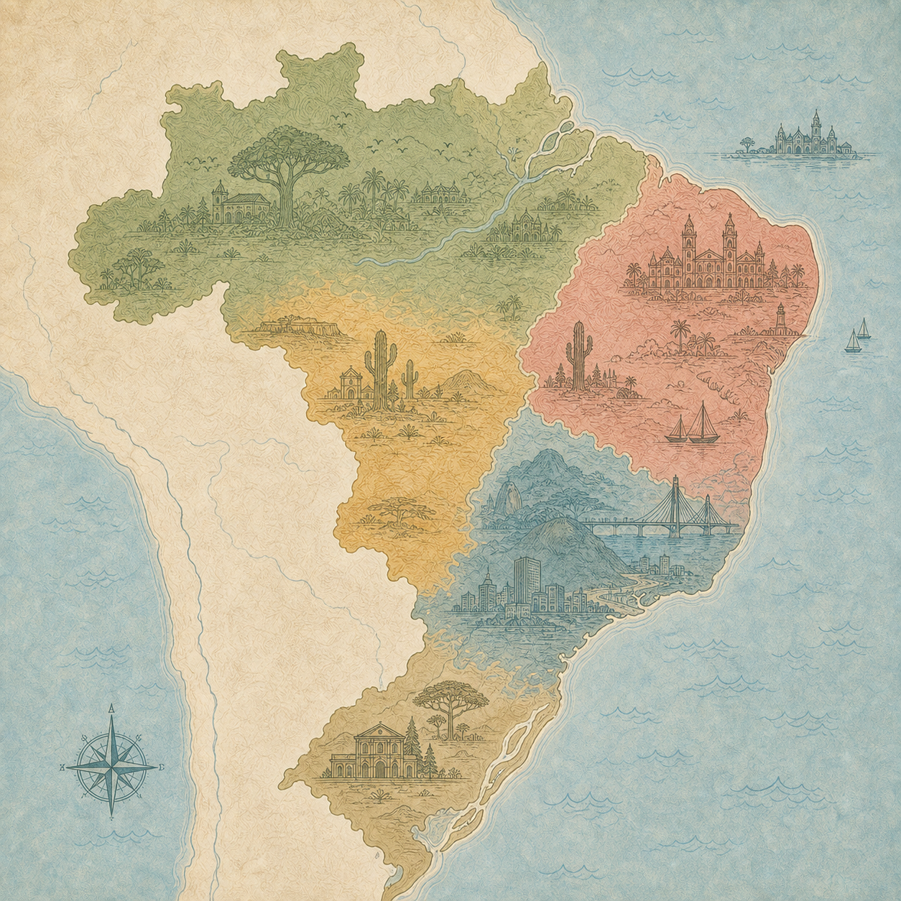
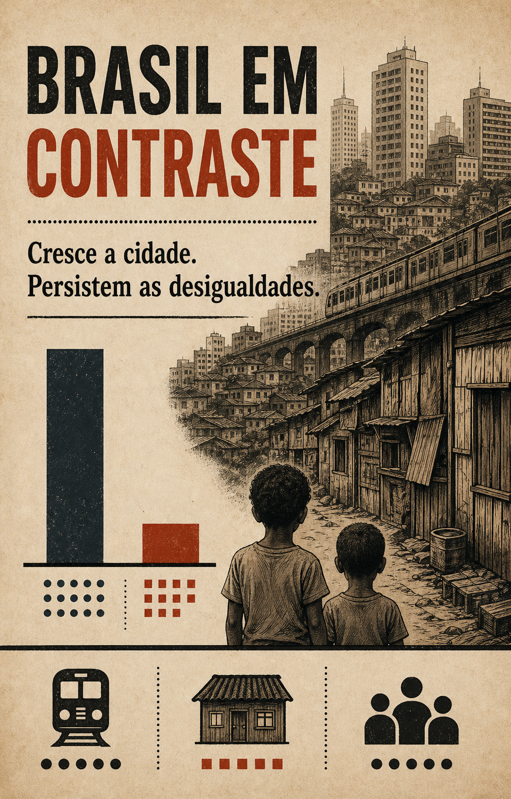

1º ano · 1º trimestreEM13LP10D103_P
Mapa da Língua
Descubra como vocativos, formalidade e escolhas lexicais revelam quem fala e para quem.
Sua biblioteca de experiências
Cada descritor ganha uma forma própria de aprender. Escolha uma experiência, observe as pistas e avance no seu ritmo.
Trilhas por descritor

1º ano · 1º trimestreDescubra como vocativos, formalidade e escolhas lexicais revelam quem fala e para quem.
Desmonte um artigo de opinião e relacione tese, justificativas, evidências e contrapontos.

3º ano · 1º trimestreCombine fotografia, título e gráfico para reconhecer a crítica social construída pelo material.
Nenhuma experiência disponível para este filtro.
Conectado ao professor de Português
Consultando o Supabase...